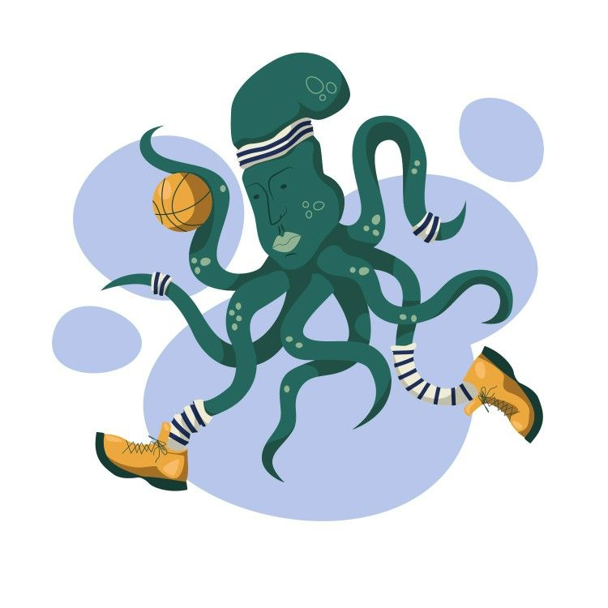

Знайдіть хобі

Хобі – це якесь заняття, яке особа знаходить для себе з метою розслаблення та отримання позитивних емоцій.
Зараз основне призначення хобі не змінилося – воно потрібне для того, щоб проводити з користю вільний час. При чому, важливо, що користь розуміється як моральне задоволення і почуття радості, а не як щось дійсне
Є багато причин, чому всі ми повинні мати хоча б одне хобі, але ось основні переваги:
Це робить вас цікавішими.
Люди, які мають захоплення, мають досвід та історії, якими вони можуть поділитися з іншими. Вони також мають спеціалізовані знання, які можуть навчити всіх, хто також має інтерес до тих же тем, що і вони.
Це допомагає зняти стрес.
Хобі дають вам можливість звільнити розум від стресів повсякденного життя. Вони дозволяють розслабитися та отримувати задоволення від діяльності, яка не пов’язана з роботою, справами чи іншими обов'язками.
Хобі допоможуть вам стати більш терплячими.
Для того, щоб розвинути нове хобі, ви повинні навчитися робити щось нове для вас. Є великі шанси на те, що будуть невдачі під час навчання, і вам потрібно буде набратися терпіння, щоб розвинути свої навички.
Хобі може допомогти вашому суспільному життю та створити зв’язок з іншими.
Це те, чим часто можна насолоджуватися з іншими людьми. Незалежно від того, чи вступаєте ви в клуб, граєте в лізі, чи просто даруєте іншим плоди вашої праці. Хобі - це прекрасний спосіб познайомитися та наблизитися до людей, які мають ті самі інтереси, що і ви.
Захоплення допомагають зменшити або викорінити нудьгу.
Вони також пропонують вам діяльність, якої ви можете з нетерпінням очікувати і радіти.
Допомагає розвинути нові навички.
Хобі, якому ви дійсно присвячуєте свій час, приведе вас до формування нових навичок. Чим більше часу витрачаєте на своє хобі, тим краще ви стаєте.
Це збільшує ваші знання.
Поряд із побудовою нових навичок, ви також отримаєте нові знання завдяки розвитку свого хобі.
Це збагачує ваше життя і дає вам інший погляд на речі.
Незалежно від того, який тип хобі ви обрали, ви неодмінно отримаєте нові ідеї. Хобі допомагають вам рости різними способами, включаючи викриття нових точок зору.
Це кидає вам виклик.
Вибираючи нове хобі, ви зіткнетесь з новими та складними речами. Якщо для вас те хобі не буде достатньо складним завданням, ви не відчуватимете бажаного задоволення. Це означатиме, що вам потрібно знайти краще хобі.
Це допомагає запобігти шкідливим звичкам і витраті часу.
Існує давня приказка, що «непрацюючі руки - це майстерня диявола». Якщо у вас є хороші захоплення, щоб заповнити вільний час, то у вас буде менше шансів витратити цей час на марну чи негативну діяльність.
Повернутися назад